Comparing Two Groups with prolfqua
Witold E. Wolski
2026-11-02
Source:vignettes/Comparing2Groups.Rmd
Comparing2Groups.RmdPurpose
This vignette demonstrates how two conditions, e.g., treatment
vs. control, can be compared and the differences statistically tested.
We use simulated protein abundances of an LFQ experiment with two
treatment groups (A, B) and a control group
(Ctrl). After first examining the data using QC plots and
then normalizing the data, we compare each treatment group with the
control. The output of the comparison is the difference in the mean
intensities for quantified proteins (log2 fold-change) in each group,
along with statistical parameters such as degrees of freedom, standard
errors, p-value and the FDR.
Simulated protein abundances
sim_lfq_data_protein_config() simulates protein
abundances in long format, one row per protein and sample, and returns
them together with a matching AnalysisConfiguration. To
read your own data, see the article Importing
your data.
xx <- prolfqua::sim_lfq_data_protein_config(Nprot = 100, weight_missing = 0.5)
xx## $data
## # A tibble: 1,200 × 8
## sample sampleName group_ isotopeLabel protein_Id abundance qValue nrPeptides
## <chr> <chr> <chr> <chr> <chr> <dbl> <dbl> <dbl>
## 1 A_V1 A_V1 A light 0EfVhX~3967 20.4 0 2
## 2 A_V1 A_V1 A light 0m5WN4~6025 16.4 0 7
## 3 A_V1 A_V1 A light 0YSKpy~2865 NA NA NA
## 4 A_V1 A_V1 A light 3QLHfm~8938 23.0 0 1
## 5 A_V1 A_V1 A light 3QYop0~7543 23.1 0 7
## 6 A_V1 A_V1 A light 76k03k~7094 25.5 0 4
## 7 A_V1 A_V1 A light 7cbcrd~7351 27.1 0 2
## 8 A_V1 A_V1 A light 7QuTub~1867 18.4 0 4
## 9 A_V1 A_V1 A light 7soopj~5352 19.5 0 2
## 10 A_V1 A_V1 A light 7zeekV~7127 20.6 0 8
## # ℹ 1,190 more rows
##
## $config
## <AnalysisConfiguration>
## Public:
## annotation_vars: function ()
## bin_resp:
## clone: function (deep = FALSE)
## factor_depth: 1
## factor_keys: function ()
## factor_keys_depth: function ()
## factors: list
## file_name: sample
## get_response: function ()
## hierarchy: list
## hierarchy_depth: 1
## hierarchy_keys: function ()
## hierarchy_keys_depth: function (names = TRUE)
## id_vars: function ()
## ident_q_value: qValue
## ident_score:
## is_response_transformed: FALSE
## isotope_label: isotopeLabel
## min_peptides_protein: 2
## norm_value: NULL
## nr_children: nrPeptides
## opt_mz:
## opt_rt:
## opt_se:
## pattern_contaminants: NULL
## pattern_decoys: NULL
## pop_response: function ()
## sample_name: sampleName
## sep: ~
## set_response: function (col_name)
## value_vars: function ()
## work_intensity: abundanceCreate the LFQData class instance and remove zero or
very small intensities, which most quantification software reports for
missing values.
lfqdata <- prolfqua::LFQData$new(xx$data, xx$config)
lfqdata$remove_small_intensities()
lfqdata$factors()## # A tibble: 12 × 3
## sample sampleName group_
## <chr> <chr> <chr>
## 1 A_V1 A_V1 A
## 2 A_V2 A_V2 A
## 3 A_V3 A_V3 A
## 4 A_V4 A_V4 A
## 5 B_V1 B_V1 B
## 6 B_V2 B_V2 B
## 7 B_V3 B_V3 B
## 8 B_V4 B_V4 B
## 9 Ctrl_V1 Ctrl_V1 Ctrl
## 10 Ctrl_V2 Ctrl_V2 Ctrl
## 11 Ctrl_V3 Ctrl_V3 Ctrl
## 12 Ctrl_V4 Ctrl_V4 CtrlYou can always convert the data into wide format.
lfqdata$data_wide()$data[1:3,1:7]## # A tibble: 3 × 7
## protein_Id isotopeLabel A_V1 A_V2 A_V3 A_V4 B_V1
## <chr> <chr> <dbl> <dbl> <dbl> <dbl> <dbl>
## 1 0EfVhX~3967 light 20.4 23.8 22.3 21.5 NA
## 2 0m5WN4~6025 light 16.4 NA NA 18.2 24.3
## 3 0YSKpy~2865 light NA 17.7 16.7 17.7 18.2Visualization of not normalized data
After this first setting up of the analysis we show now how to normalize the proteins and the effect of normalization. Furthermore we use some functions to visualize the missing values in our data.
lfqplotter <- lfqdata$get_Plotter()
density_nn <- lfqplotter$intensity_distribution_density()Visualization of missing data
lfqplotter$na_heatmap()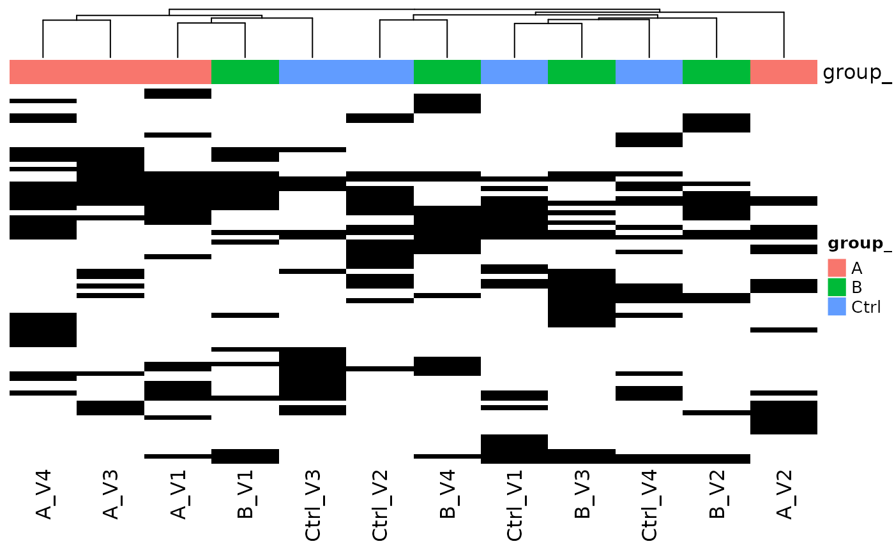
Heatmap of missing protein intensities, black - missing, white - present
lfqdata$get_Summariser()$plot_missingness_per_group()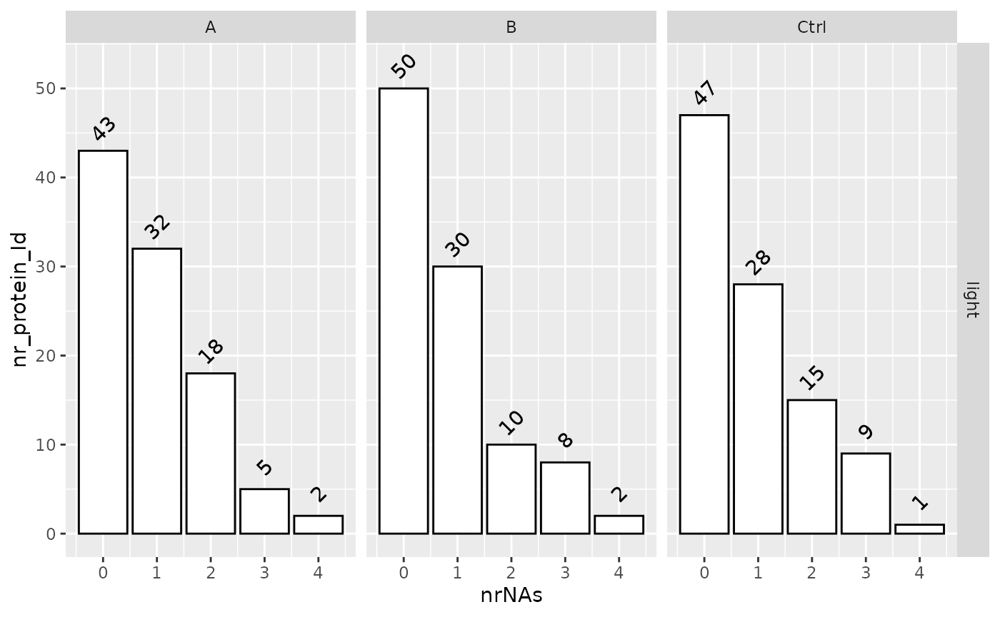
# of proteins with 0,1,…N missing values
lfqplotter$missigness_histogram()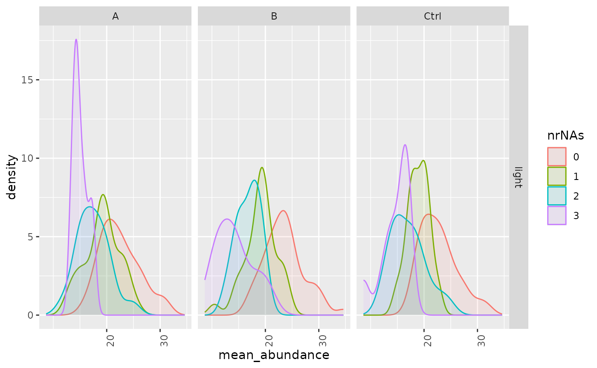
Intensity distribution of proteins depending on # of missing values
Computing standard deviations, mean and CV.
Other important statistics such as coefficient of variation, means
and standard deviations can be easily calculated using the
get_Stats function and visualized with a violin plot.
stats <- lfqdata$get_Stats()
stats$violin()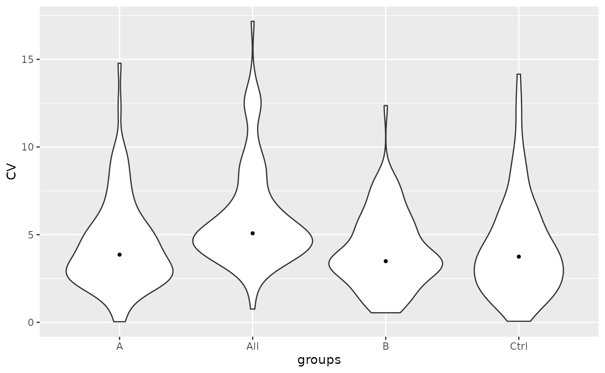
Violin plots of CVs in the different groups and among all groups
prolfqua::table_facade( stats$stats_quantiles()$wide, paste0("quantile of ",stats$stat ))| probs | A | B | Ctrl | All |
|---|---|---|---|---|
| 0.10 | 2.121145 | 1.445998 | 1.499604 | 3.416437 |
| 0.25 | 2.603169 | 2.734033 | 2.135081 | 4.316819 |
| 0.50 | 3.860492 | 3.487257 | 3.744767 | 5.077622 |
| 0.75 | 5.552086 | 5.449944 | 5.701197 | 7.229931 |
| 0.90 | 7.745671 | 6.931290 | 8.396967 | 10.211265 |
stats$density_median()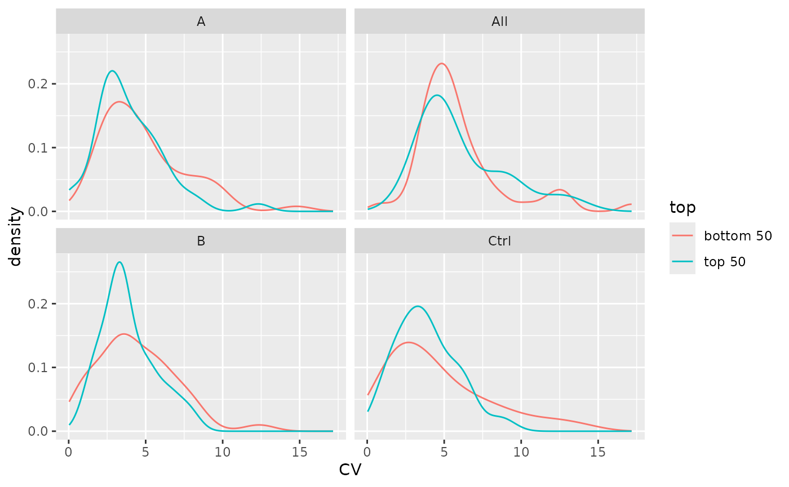
Distribution of CV’s for top 50% and bottom 50% proteins by intensity.
Normalize protein intensities and show diagnostic plots
We normalize the data by transforming and then .
lt <- lfqdata$get_Transformer()
transformed <- lt$log2()$robscale()$lfq
transformed$is_transformed()## [1] TRUE
pl <- transformed$get_Plotter()
density_norm <- pl$intensity_distribution_density()
gridExtra::grid.arrange(density_nn, density_norm)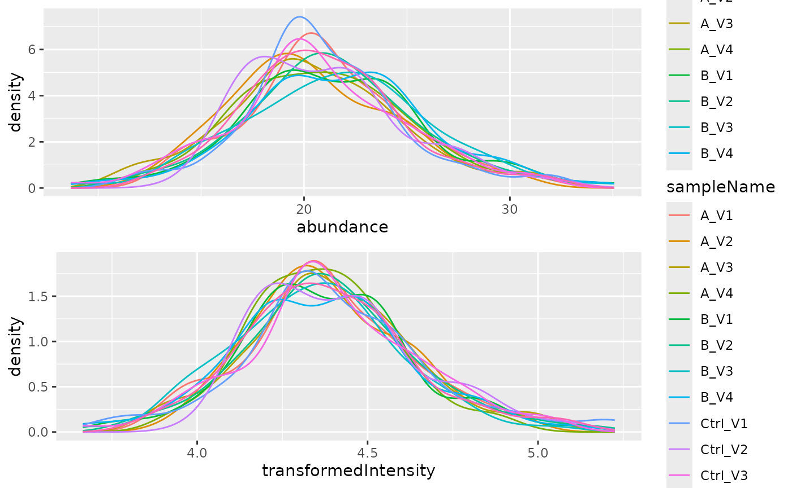
Distribution of intensities before and after normalization.
pl$pairs_smooth()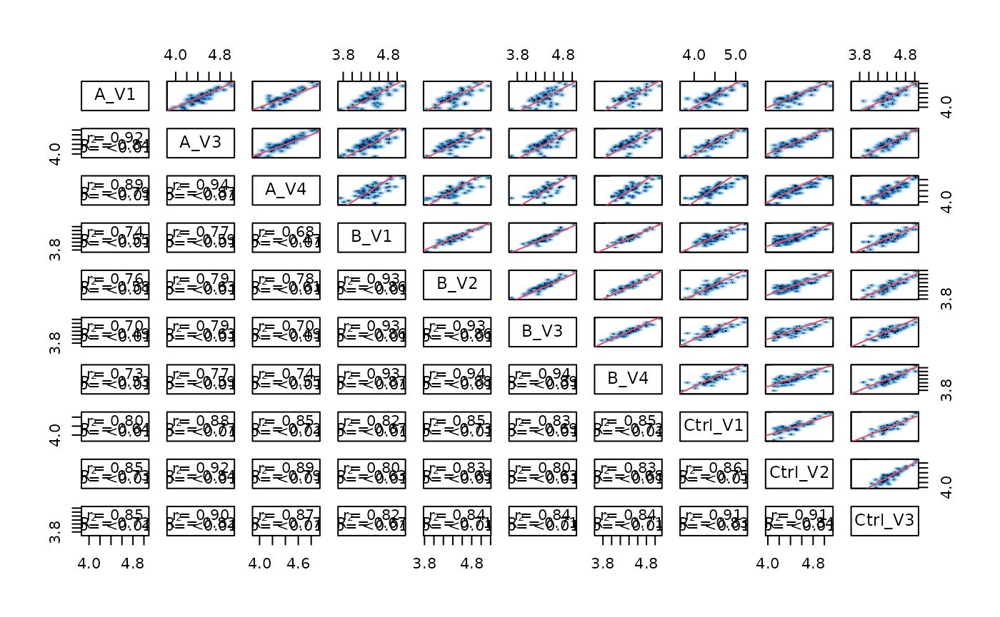
Scatterplot matrix
## NULL
p <- pl$heatmap_cor()
p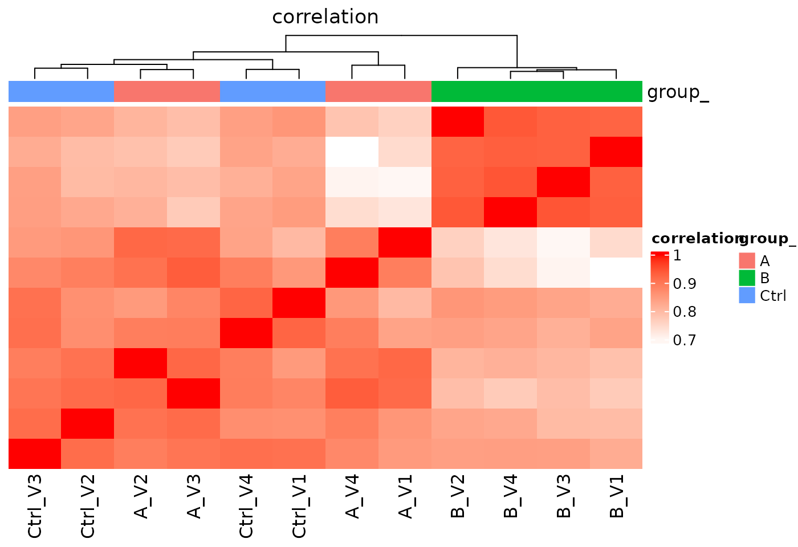
Heatmap, Rows - proteins, Columns - samples
Fit the model and compute contrasts
We compare each treatment group with the control.
build_contrast_analysis() fits one model per protein and
computes the contrasts in one call. We use the method
lm_impute: a linear model per protein, with the protein
variances moderated by the empirical Bayes method so that proteins with
few observations borrow strength from all proteins. Proteins without
observations in one group are refitted with the missing values set to
the limit of detection (LOD). The article Filling
the gaps uses these models to complete the data for heatmaps and
PCA. The vignette All modelling methods
at a glance lists the other methods.
contr_spec <- c(
"AvsC" = "group_A - group_Ctrl",
"BvsC" = "group_B - group_Ctrl"
)
fa <- build_contrast_analysis(transformed, "~ group_", contr_spec, method = "lm_impute")
contrdf <- fa$get_contrasts()The column estimate_type tells how each estimate was
obtained: observed from the measured intensities,
lod_imputed from the refit at the LOD.
dplyr::count(contrdf, contrast, estimate_type)## # A tibble: 4 × 3
## contrast estimate_type n
## <chr> <chr> <int>
## 1 AvsC lod_imputed 7
## 2 AvsC observed 93
## 3 BvsC lod_imputed 7
## 4 BvsC observed 93
plotter <- fa$get_Plotter()
plotter$volcano()$FDR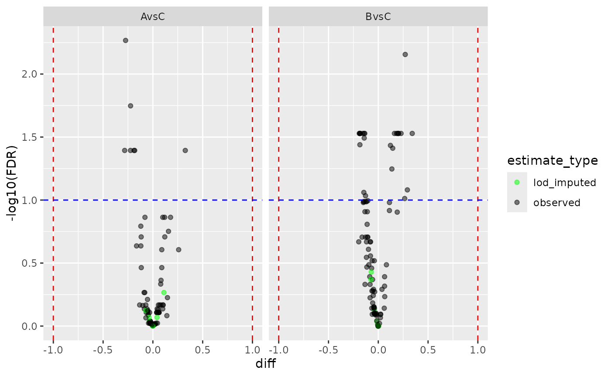
Volcano plots of the two contrasts.
plotter$ma_plot()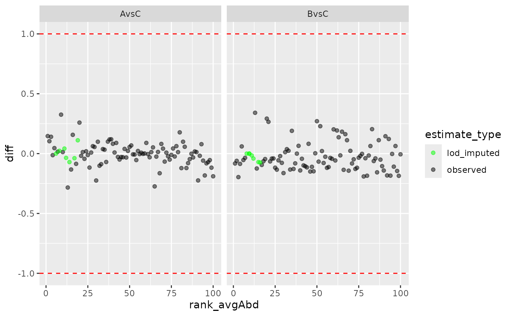
MA plot showing the dependency of mean abundance with respect to the difference
The proteins with FDR < 0.1 in at least one contrast:
sig <- dplyr::filter(contrdf, FDR < 0.1)
signif <- transformed$get_copy()
signif$set_data(signif$data_long() |> dplyr::filter(protein_Id %in% sig$protein_Id))
hmSig <- signif$get_Plotter()$heatmap()
hmSig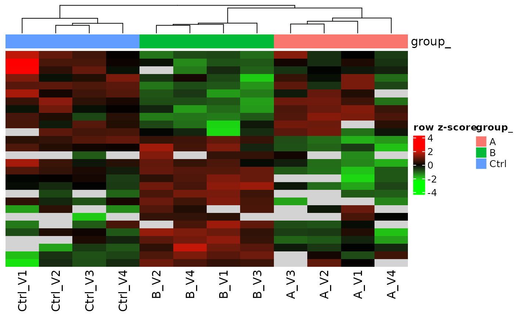
Heatmap of the proteins with FDR < 0.1 in at least one contrast
myProteinIDS <- head(unique(contrdf$protein_Id), 3)
dplyr::filter(contrdf, protein_Id %in% myProteinIDS)## # A tibble: 6 × 16
## modelName estimate_type protein_Id contrast diff avgAbd
## <chr> <chr> <chr> <chr> <dbl> <dbl>
## 1 lm_impute observed 0EfVhX~3967 AvsC 0.0808 4.43
## 2 lm_impute observed 0m5WN4~6025 AvsC -0.225 4.23
## 3 lm_impute observed 0YSKpy~2865 AvsC 0.0192 4.16
## 4 lm_impute observed 0EfVhX~3967 BvsC -0.119 4.33
## 5 lm_impute observed 0m5WN4~6025 BvsC 0.162 4.42
## 6 lm_impute observed 0YSKpy~2865 BvsC -0.0640 4.11
## # ℹ 10 more variables: std.error.unmoderated <dbl>, df.unmoderated <dbl>,
## # std.error <dbl>, statistic <dbl>, df <dbl>, p.value <dbl>, conf.low <dbl>,
## # conf.high <dbl>, sigma <dbl>, FDR <dbl>Protein and contrast pairs that lm_impute could not
estimate, if any:
fa$get_missing()## # A tibble: 0 × 2
## # ℹ 2 variables: protein_Id <chr>, contrast <chr>Gene Set Enrichment Analysis (GSEA)
After computing contrasts, proteins can be ranked by log2 fold change or t-statistic and subjected to gene set enrichment analysis. The typical workflow is:
- Extract UniProt IDs from the contrast results using
prolfqua::get_uniprot_id_from_fasta_header() - Map UniProt IDs to Entrez Gene IDs using
AnnotationDbi::mapIds()with a species-specific annotation package - Create a named ranked list (statistic values named by gene IDs)
- Run GSEA using
clusterProfiler::gseGO()orclusterProfiler::gseKEGG()
For details see:
- clusterProfiler book – comprehensive guide to enrichment analysis in R
- clusterProfiler Bioconductor page
- AnnotationDbi – for mapping between gene identifier types
The prolfqua package is described in (Wolski et al. 2023).
Session Info
## R version 4.6.2 (2026-10-29)
## Platform: x86_64-pc-linux-gnu
## Running under: Ubuntu 26.04.1 LTS
##
## Matrix products: default
## BLAS: /usr/lib/x86_64-linux-gnu/openblas-pthread/libblas.so.3
## LAPACK: /usr/lib/x86_64-linux-gnu/openblas-pthread/libopenblasp-r0.3.32.so; LAPACK version 3.12.0
##
## locale:
## [1] LC_CTYPE=C.UTF-8 LC_NUMERIC=C LC_TIME=C.UTF-8
## [4] LC_COLLATE=C.UTF-8 LC_MONETARY=C.UTF-8 LC_MESSAGES=C.UTF-8
## [7] LC_PAPER=C.UTF-8 LC_NAME=C LC_ADDRESS=C
## [10] LC_TELEPHONE=C LC_MEASUREMENT=C.UTF-8 LC_IDENTIFICATION=C
##
## time zone: UTC
## tzcode source: system (glibc)
##
## attached base packages:
## [1] stats graphics grDevices utils datasets methods base
##
## other attached packages:
## [1] prolfqua_1.9.0 dplyr_1.2.1 BiocStyle_2.40.0
##
## loaded via a namespace (and not attached):
## [1] Rdpack_2.6.6 gridExtra_2.3.1 rlang_1.3.0
## [4] magrittr_2.0.5 clue_0.3-68 GetoptLong_1.1.1
## [7] otel_0.2.0 matrixStats_1.5.0 compiler_4.6.2
## [10] mgcv_1.9-4 png_0.1-9 systemfonts_1.3.2
## [13] vctrs_0.7.3 pkgconfig_2.0.3 shape_1.4.6.1
## [16] crayon_1.5.3 fastmap_1.2.0 backports_1.5.1
## [19] labeling_0.4.3 utf8_1.2.6 promises_1.5.0
## [22] rmarkdown_2.32 nloptr_2.2.1 ragg_1.5.2
## [25] UpSetR_1.4.1 purrr_1.2.2 xfun_0.62
## [28] glmnet_5.2 jomo_2.7-6 logistf_1.26.1
## [31] cachem_1.1.0 jsonlite_2.0.0 progress_1.2.3
## [34] later_1.4.8 pan_2.0 prettyunits_1.2.0
## [37] broom_1.0.13 parallel_4.6.2 cluster_2.1.8.3
## [40] R6_2.6.1 stringi_1.8.9 bslib_0.12.0
## [43] RColorBrewer_1.1-3 limma_3.68.5 boot_1.3-32
## [46] rpart_4.1.27 jquerylib_0.1.4 Rcpp_1.1.2
## [49] bookdown_0.48 iterators_1.0.14 knitr_1.52
## [52] IRanges_2.46.0 httpuv_1.6.17 Matrix_1.7-6
## [55] splines_4.6.2 nnet_7.3-21 tidyselect_1.2.1
## [58] yaml_2.3.12 doParallel_1.0.17 codetools_0.2-20
## [61] lattice_0.23-1 tibble_3.3.1 plyr_1.8.9
## [64] shiny_1.14.0 withr_3.0.3 S7_0.2.2
## [67] evaluate_1.0.5 desc_1.4.3 survival_3.8-12
## [70] circlize_0.4.18 pillar_1.11.1 BiocManager_1.30.27
## [73] mice_3.19.0 KernSmooth_2.23-27 foreach_1.5.2
## [76] stats4_4.6.2 reformulas_0.4.4 plotly_4.12.1
## [79] generics_0.1.4 hms_1.1.4 S4Vectors_0.50.3
## [82] ggplot2_4.0.3 scales_1.4.0 minqa_1.2.8
## [85] xtable_1.8-8 glue_1.8.1 tools_4.6.2
## [88] data.table_1.18.6.1 lme4_2.1-0 forcats_1.0.1
## [91] fs_2.1.0 grid_4.6.2 tidyr_1.3.2
## [94] crosstalk_1.2.2 rbibutils_2.4.1 colorspace_2.1-4
## [97] nlme_3.1-171 formula.tools_1.7.1 cli_3.6.6
## [100] textshaping_1.0.5 viridisLite_0.4.3 ComplexHeatmap_2.28.0
## [103] gtable_0.3.6 sass_0.4.10 digest_0.6.39
## [106] operator.tools_1.6.3.1 BiocGenerics_0.58.1 ggrepel_0.9.8
## [109] rjson_0.2.23 htmlwidgets_1.6.4 farver_2.1.2
## [112] htmltools_0.5.9 pkgdown_2.2.1 lifecycle_1.0.5
## [115] httr_1.4.9 mime_0.13 GlobalOptions_0.1.4
## [118] mitml_0.4-5 statmod_1.5.2 MASS_7.3-66